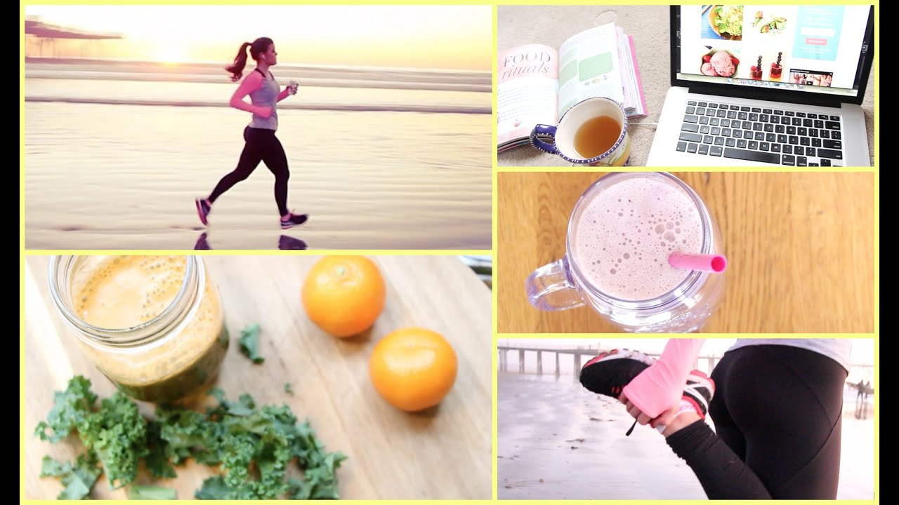

Healthy LifeStyle
The Essentials of a Healthy Lifestyle

Strona główna Recenzje Przepisy "Smakując Australię" Zdrowe odżywianie Inne Kontakt i współpraca poniedziałek, 8 października 2018
Purella, BeRaw! Kulki Chocolate Mint Explosion - Recenzja
Wielokrotnie wspominałam Wam o tym, że nie jestem wielką fanką połączenia czekolady z miętą. Jednak Dobra Kaloria z ziarnami kakaowca i miętą naprawdę bardzo mi smakowała, więc... Nie skreślałam z marszu tego wariantu smakowego kulek sygnowanych twarzą i nazwiskiem Ewy Chodakowskiej. Tym bardziej, że były w promocyjnej cenie. Czytaj więcej » Autor: EllaCanto o 09:00 Brak komentarzy: Wyślij pocztą e-mail Wrzuć na bloga Udostępnij w usłudze Twitter Udostępnij w usłudze Facebook Udostępnij w serwisie Pinterest Etykiety: Baton , Bez cukru , Bez glutenu , Bez laktozy , Durszlak , Wegańskie
czwartek, 4 października 2018
Purella, BeRaw! Kulki Oriental Boost - Recenzja
Recenzję białkowych kulek BeRaw! Cocoa Pleasure obiecałam Wam jakiś czas temu, ale... tak, tak. Kulki zniknęły, nie doczekawszy się recenzji, a jadłam je na raty. Zawierały bowiem białka mleka krowiego, którego unikam w diecie, a jak już jem, to w niskich stężeniach . Pokrótce tylko o nich wspomnę - były to drugie kulki z tej serii, jakie próbowałam i bardzo się na nich zawiodłam. Twarde, prawie niesłodkie i zbite. Pierwszymi kulkami się zachwyciłam - a były to właśnie Oriental Boost, którymi się zachwyciłam, choć często zdrowe batony z korzennymi przyprawami bywały dla mnie problematyczne. Czym tu się zachwycać...? ;) Czytaj więcej » Autor: EllaCanto o 09:00 Brak komentarzy: Wyślij pocztą e-mail Wrzuć na bloga Udostępnij w usłudze Twitter Udostępnij w usłudze Facebook Udostępnij w serwisie Pinterest Etykiety: Bez cukru , Bez glutenu , Bez laktozy , Bez nabiału , Durszlak , Wegańskie
poniedziałek, 1 października 2018
Legal Cakes, baton Red Velvet - Recenzja
Przyszedł czas na recenzję ostatniego batona, którego otrzymałam jako nagrodę w konkursie Legal Cakes. Ten wariant jadłam już uprzednio - nie pamiętam nawet, w jakich okolicznościach, ani dlaczego nie doczekał się recenzji na blogu, ale pamiętam, że bardzo, bardzo mi smakował. Choć znanego ciacha Red Velvet nie jadłam i nie mogę odnieść smaku tego batona do oryginału, to jednak jak najlepiej starałam się opisać produkt od zdrowej cukierni :) Czytaj więcej » Autor: EllaCanto o 09:00 12 komentarzy: Wyślij pocztą e-mail Wrzuć na bloga Udostępnij w usłudze Twitter Udostępnij w usłudze Facebook Udostępnij w serwisie Pinterest Etykiety: Baton , Bez cukru , Bez glutenu , Bez laktozy , Bez nabiału , Durszlak , Wegańskie Starsze posty Strona główna Subskrybuj: Posty (Atom)O mnie
EllaCanto Zdrowy styl życia to równowaga między dobrą dietą, aktywnością fizyczną i psychiką. Zgodnie z Hipokratesową zasadą uważam, że jedzenie jest naszym lekarstwem. Dlatego chcę udowodnić, że zdrowo znaczy smacznie i nie zawsze musimy rezygnować z naszych ulubionych smaków. Zapraszam w kulinarną podróż po zdrowie! Wyświetl mój pełny profilPopularne posty
Bakalland, Ba! Batony zbożowo-owocowe bez cukru - wersja kokos & chia, wiśnia & amarantus, truskawka & quinoa - Recenzja zbiorcza Bakalland, Ba! Protein - recenzja zbiorcza Babka ziemniaczana - danie regionalne w wersji fit! Alesto, Coconut & Maracuja Raw Bar - Recenzja Alesto, Peanuts & Dates Raw Bar - Recenzja Idealna kolacja lub lunch do pracy - brokułowa sałatka z tuńczykiem Deser Kinder Country w zdrowej wersji - bez nabiału, glutenu, cukru i jajek Lekka sałatka z fasolką szparagową Kruche ciasto z masą kajmakową z daktyli! Relacja z wypadu do Zakopanego oraz Popradu i haul spożywczyArchiwum bloga
▼ 2018 (65) ▼ października (3) Purella, BeRaw! Kulki Chocolate Mint Explosion - R... Purella, BeRaw! Kulki Oriental Boost - Recenzja Legal Cakes, baton Red Velvet - Recenzja ► września (7) ► sierpnia (2) ► lipca (5) ► czerwca (7) ► maja (7) ► kwietnia (11) ► marca (10) ► lutego (9) ► stycznia (4) ► 2017 (160) ► grudnia (10) ► listopada (8) ► października (13) ► września (14) ► sierpnia (13) ► lipca (16) ► czerwca (16) ► maja (16) ► kwietnia (13) ► marca (14) ► lutego (14) ► stycznia (13) ► 2016 (123) ► grudnia (16) ► listopada (15) ► października (11) ► września (16) ► sierpnia (14) ► lipca (11) ► czerwca (12) ► maja (9) ► kwietnia (9) ► marca (9) ► lutego (1)Współpraca
Szukaj na tym blogu
Znajdziesz mnie:
Motyw Prosty. Obsługiwane przez usługę Blogger .Posted by Jack  Read more
Read more  Comments (15)
Comments (15)  2020.09.15 13:26
2020.09.15 13:26